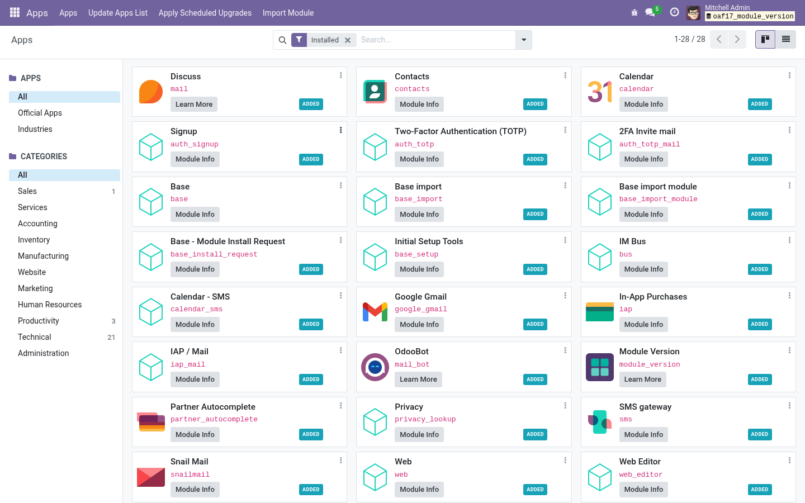

See at a glance which modules were just added, just upgraded or are waiting for an upgrade, and keep a history of who changed what.
Odoo 17.0 Community & Enterprise Free · LGPL-3

The Apps list marks each installed module as added, upgraded or with a new version on disk.
ADDED, UPGRADED and NEW VERSION show on the module cards for administrators.
Compares the version on disk with the installed one; filter by Updates Available.
Every install, upgrade and uninstall with date, user and versions, also as a tab on each module.
The Apps list view sorts by last install or upgrade date, and can group by month.
Apps › Check App Store Updates lists modules with a newer version on the store.
The module form shows where the module lives on disk.
Free and open source (LGPL-3) by Paulius Gaizauskas · Questions or bugs: GitHub issues